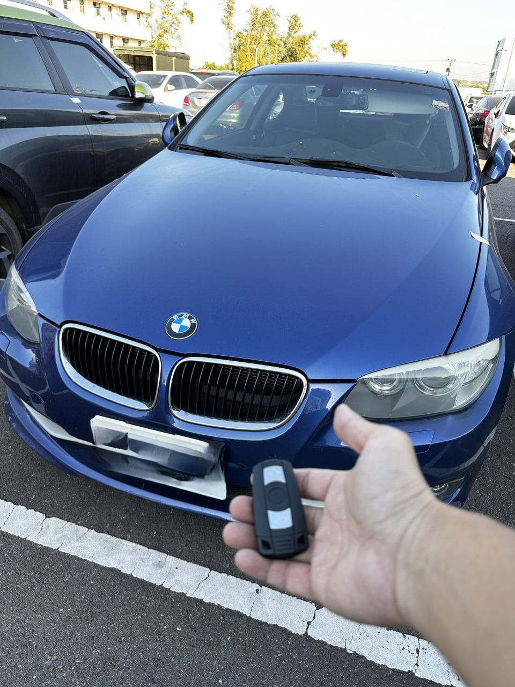

實戰現場：彰化花壇，執行 BMW 3 Series 防盜系統數據採集與匹配
解密 BMW CAS 防盜系統：為什麼現場救援是最佳方案？
BMW 3系列（如經典的 E90 世代）採用了精密且連動性強的 CAS 防盜系統。當所有鑰匙遺失時，車輛會處於完全鎖定狀態，電子方向盤鎖與啟動馬達均無法作動。
在彰化花壇的救援現場，我們利用高階診斷設備對接車輛通信協議，在不拆卸模組的情況下讀取底層數據。透過精密計算與密鑰同步，我們在現場成功恢復了車輛的啟動權限，並配製了全新的智慧晶片鑰匙。
數據安全性
嚴格遵循 BMW 原廠通信規範，確保數據重構過程穩定，不留故障碼，保障後續行車安全。
全區域遠征
彰化花壇地區緊急支援，省去拖吊至台中原廠的高昂費用與長達數週的等待。當天完工、現場交車。
極致核心：專攻歐系車鑰匙疑難雜症
不論是 CAS1、CAS2 還是更為複雜的 CAS3/CAS3+，極致核心 ProCore 均擁有完整的技術對應方案。我們致力於提供原廠等級的設備與職人級的細膩工法，讓您的愛車在遭遇鑰匙危機時能獲得最體面的處理。
需要 BMW 緊急救援？
預約諮詢：0909-277-670